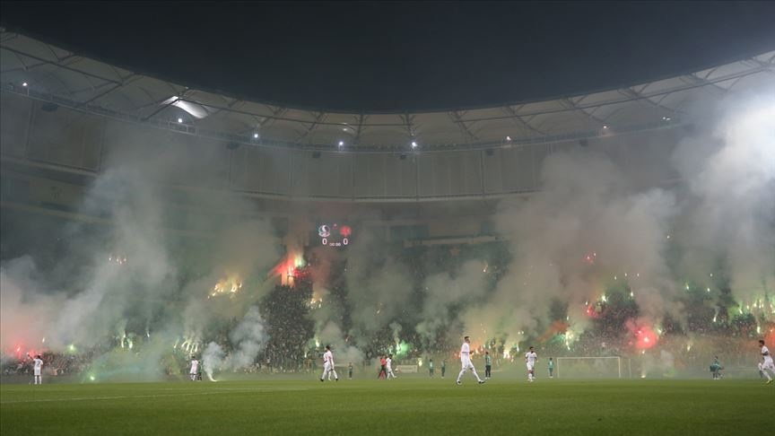

Sakaryaspor Kulübü'nün Kuruluş Hİkayesİ
Sehrin 1900'lü yılların başında başlayıp, zaman içinde olgunlaşan köklü futbol geçmişinin, bir potada harmanlandığı, şehrin tüm farklı futbol değerlerinin güçlerini birleştirme iradesi gösterdiği 1965 yılında başlar. Dönemin gençlik ve spor bakanlığının, oluşturmak istediği Türkiye II. Milli Futbol Ligi projesi ve bunun ile ilgili olarak şehrin önde gelenlerinin girişim yapmasını talep etmesi, kuruluşun mihenk taşıdır. Dönemin futbol federasyonu başkanı Orhan Şeref Apak'ın girişimleri ve o dönem Adapazarı Şekerspor kaleciliğini yapan Fikret Aldinç'in Sakarya şehrinin futbol birikimine kefil olması ile süreç resmen başlamıştır.
10 Mayıs 1965 tarihinde Sakarya'da bulunan köklü takımlardan İdman Yurdu başkanı Av.Ali Necdet Güven, Güneşspor kulüp başkanı Ethem Boran, Gençler Birliği kulüp başkanı Şevket Başak, Ada Genlik kulübü 2.başkanı Hamdi Uzel ve beraberindeki yöneticiler bir araya gelerek, şehrin tüm dinamiklerini ve güçlerini tek çatı altında toplanarak, şehrin tek profesyonel takımını kurulmasına dair görüşmeleri başlatmışlardır. Sakaryaspor'un temelleri bu görüşmelerde atılmıştır.
Ethem Boran'ın çalışmalara liderlik etmesi ile kuruluş süreci hızlanmış, İdman Yurdu, Ada Gençlik, Gençler Birliği ve Güneşspor bünyesinden gelen 20 kişilik kurucu listesi, Sakaryaspor kulübünün kuruluş dilekçesini 17 Haziran 1965 yılında ilgili kurumlara sunarak, büyük fedakarlıklarla efsane'nin hikayesini yazmaya başlamışlardır.
80'lİ yıllar ve 1. Lİge İlk Yükselİş
1973-74 sezonunda 1. Lig'e çok yaklaşan ama Trabzonspor'a geçilen Sakaryaspor, 1980-81 sezonunda 2. Lig A Grubu şampiyonu olarak 1. Lig'e çıkmıştır. 1. Lig'de en iyi derecesini 1981-82 sezonunda 5. olarak yapan Sakaryaspor aynı sezon, Fenerbahçe'yi deplasmanda 1-0, Galatasaray'ı deplasmanda 2-0 geçmiş, Beşiktaş'la ise İstanbul'da 1-1 berabere kalmıştır. 1985-86 sezonunda sondan 3. olarak 2. Lig'e düşmiştür. Ancak ertesi sezon 2. Lig C Grubu'nda Konyaspor'u averajla geçerek yeniden 1. Lig'e dönmüştür.
Türkİye Kupası Şampİyonluğu
(1987-1988)
1987-88 sezonunda, Necdet Niş teknik yönetiminde; Aykut Kocaman, Oğuz Çetin, Turhan Sofuoğlu, Engin İpekoğlu, Serdar Şenkaya, Sinan Turhan, Kemal Yıldırım'lı kadrosu ile takım tarihindeki en büyük başarısına Türkiye Kupası şampiyonu olarak ulaşmıştır. İlk turda Konyaspor'u (4-0, 1-0), ikinci turda Fenerbahçe'yi (5-1, 1-2), çeyrek finalde Beşiktaş'ı (4-0, 1-0), yarı finalde Zonguldakspor'u (5-0, 0-1) ve nihayet finalde Samsunspor'u (2-0, 1-1) lik skorlarla geçerek bu tarihi başarıya ulaşır.Özellikle farklı Fenerbahçe ve Beşiktaş galibiyetleri ses getirmiş, sezonun kupa şampiyonluğuyla tamamlanmasının ardından; Oğuz, Aykut, Turan ve Serdar Fenerbahçe'ye transfer olmuş; Fenerbahçe'nin bir sonraki 1988-89 sezonundaki 103 gollü efsane şampiyonluğunda başrolü oynamışlardır.
Sakaryaspor ertesi sene Türkiye'yi UEFA Kupa Galipleri Kupası'nda temsil ederek, tarihinde ilk kez uluslararası bir kupada boy göstermiştir. Kupanın ilk turunda Macar temsilcisi Spartakus takımını Dušan Pešić ve Yücel Çolak'ın golleriyle 2-0, sonraki maçı ise 0-1 kazanarak geçmiştir. Ancak 2. turda Alman Eintracht Frankfurt takımına 3-1 ve 3-0'lık skorlarla boyun eğerek elenmiştir.
Sakaryaspor'un problemlİ yılları
2008-09 Sezonunda ikili averajla tarihinde ilk kez 2. lig'e düşen Sakaryaspor çok büyük mali problemler yaşamıştır. Hatta 1987-88 Federasyon kupası dahi haczedilmek istenmiş ama taraftarlar bu duruma mani olmuştur.
2010-11 Sezonunda play-off maçlarıyla birlikte 1. Lig'e tekrardan yükselmiştir. Ancak transfer yasağı nedeniyle kulüp zor günler geçirmiş ve 2011-2012 sezonunda 3 yıl aradan sonra mücadele ettiği 1. Lig'de ligi 17.sırada tamamlayarak tekrar 2. Lig'e düşmüştür. Mali olarak zor günlerin devam ettiği 2012-2013 sezonununu 2. Lig Kırmızı Grup'u son sırada tamamlayarak, tarihinde ilk defa 3. Lig'e düşmüştür. 2013 Şubat ayında mali problemler nedeniyle genel seçimde aday çıkmayınca bir ilk yaşanmış ve Taraftarlar ve Futbolcular yönetime seçilmişlerdir.
dİrİlİş ve yükselİş yılı
Sakaryaspor'un kuruluşunun 51.Yıldönümü şerefine şampiyonluk için 2016-2017 sezonu seçilmiştir. Kadrosuna Ferhat Yazgan, Erçağ Evirgen ve Murat Hacıoğlu gibi Tecrübeli futbolcuları, teknik Heyetine ise Tuncay Şanlı, Mehmet Aurelio gibi eski millî futbolcuları katmıştır. Tuncay Şanlı ayrılıp Osman Özdemir takımın başına geçmiştir. Sezonu grupta 2. tamamlamış Play-Off finalinde Diyarbekirspor'u 2-1 mağlup ederek Spor Toto 2. Lig'e yükselmiştir.
2018-19 2. Lig Beyaz grupta yer alan Sakaryaspor Ahmet Yıldırım ile başladığı sezonda, 4. haftanın ardından İsmail Ertekin ve 28. haftanın ardından Şaban Yıldırım yönetiminde ligde mücadele etti. 34 maçta 20 galibiyet, 9 beraberlik ve 5 mağlubiyet aldı. 69 puan toplayarak grubunu 4. tamamladı ve play-off oynamaya hak kazandı. Play-off çeyrek finalinde Samsunspor'u 2 1-0 ve 0-0'lık, yarı finalde Sarıyer'i 4-0 ve 0-0'lık maçlar sonucunda eleyerek finale yükseldi. Bursa Büyükşehir Belediye Stadyumu'nda Fatih Karagümrük ile oynanan final maçında 2-0 mağlup olan Sakaryaspor 1. Lig'e çıkma şansını son maçta kaybederken Fatih Karagümrük şuanda Süper Lig'de 9. sırada yer almaktadır. 2019-20 sezonunda ise ligi 5. sırada tamamlayan takım oynadığı play off maçları sonucu çeyrek finalde elenerek sezona havlu atmıştır.
 2018-19 Sezonu Play-Off maçından bir kare
Taraftarlar
Tatangalar, 1990 yılında Sakaryaspor Altyapı oyuncuları tarafından kurulan ve adını Kurtlarla Dans filminden alan taraftar grubudur.Grubun liderliğini Keçi Yılmaz yapmaktadır. Tatangalar, şehrin en büyük sivil toplum örgütüdür. Yaptıkları farklı pankartları ve sloganlarıyla nam salan Tatangalar yalnız tribün faktörleriyle değil sosyal yardım kampanyalarıyla da adından sıkça söz ettirmektedir.